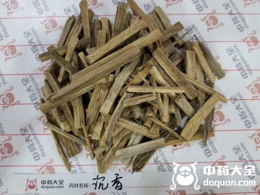
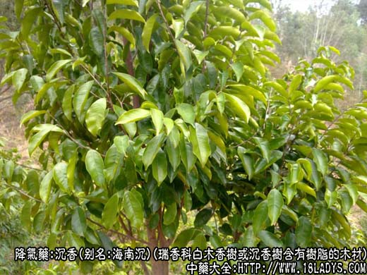
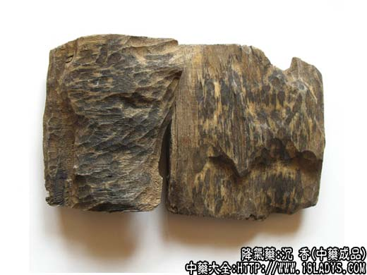
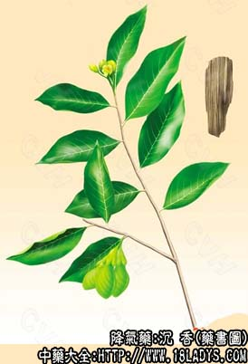

沉香为较常用中药。始载《名医别录》。
别名：海南沉。
来源：为瑞香科植物常绿乔木白木香树（国产沉香）或沉香树（进口沉香）在生长过程中受到虫食蚁蛀，伤处树脂外溢浸渗于洞穴周围，久则结香。产地劳动人民根据结香原理，采取刀砍斧凿使树木受伤结香，采回有结香的木材，剔去不含树脂泡朽部分，干燥后即为沉香。有国产也有进口。野生或栽培。
产地：沉香生产于热带及亚热带地区，我国广东海南岛、湛江、广西玉林等地区有产。国外印度、印尼、泰国、越南、柬埔寨、马来西亚、缅甸等国均有生产。
性状鉴别：国产沉香：呈不规则的块状，大小不一，剔去朽木部分，具长短不一的纵沟及纵棱，含油足的木质部黑棕色，微有光泽，含油较少的木质部淡褐色，不含油的木质部黄白色，色深淡交错，形成纵顺花纹或花斑纹。虫伤及创伤部分黄褐色，显粗糙呈枯朽样。凸凹不平或有孔洞，并常附带有微量泥土。含油足者质坚重，入水下沉或半沉；含有少或不含油者质较轻泡，入水上浮。易点燃，烧时发浓烟，有黑色油状树脂冒出，并有浓郁香气四溢。气芳香，味微苦。
进口沉香：呈条状块或盔状，表面黄棕色至黑棕色，花纹不明显，微有光泽，并有黑棕色树脂凝结于表面。质坚重，不易折断，纵裂面木质纤维较粗。气味与国产沉香相同，但较浓烈。
以上两种沉香均以色黑质重，树脂显著，入水下沉者为佳。
主要成分：含挥发油及树脂，进口沉香油中主要为苄基丙酮、对甲氧基苄丙酮，高级萜醇等。
功效与作用：降气、散寒，其作用可能为镇痛、镇静。
炮制：劈小块或磨粉，生用。
性味：辛、微温。
归经：入胃、肾、脾经。
功能：降气、温中，暖肾助阳。
主治：气逆喘急，呕吐，呕逆，心腹冷痛，肠鸣泄泻，腰膝虚冷，男子精冷等症。
临川应用：主治小腹疼痛。
1、治虚寒血滞所致的小腹疼痛，脐下觉有气动的冷感（可见于月经不调等症），多配乌药、木香、延胡索等，方如沉香降气散加减。
2、治肺气壅滞所致的气逆喘息（如支气管哮喘），作为辅助药，配熟地、苏子、莱菔子、橘红、桑白皮等。其原理前人认为是由于沉香有降逆平喘作用，故有助于止喘。近年来，有人用沉香1.5g，配侧柏叶3g，共研极细末，临睡前顿服，初步观察，对治疗支气管哮喘有较好效果。
3、治胃寒而致的呃逆、呕吐（急性胃炎），常配丁香、肉桂，或紫苏、豆蔻。此时，沉香作健胃药用。
此外，沉香配肉苁蓉可治气虚便秘。亦有人用沉香治血管神经性水肿，证见面目浮肿，小便不畅，配冬葵子、白间翁等同用。
使用注意：1、沉香和肉桂都善于治气血虚寒瘀滞所致的小腹痛，但沉香偏于从理气方面发挥作用而通滞，肉桂偏于人温阳方面发挥作用而散寒；2、气虚下陷，或阴虚火旺者均不宜用沉香。
用量：0.9～3g，多为磨粉后丸散用。如入煎剂，最好磨汁和药一起冲服或后下。
处方举例：沉香降气散加减：沉香末2.4g（冲），台乌9g，槟榔9g，木香3g（后下），延胡索6g，香附3g，水煎服。
注：沉香有多种规格。现国产沉香分为4等，主要是依据含油多少而定。
1、等应无白木，全含油，体质坚重。
2、等稍显白木，含油部分约占70%以上。
3、等白木比重较多，含油部分约占50%以上。
4、等白木比重大，含油部分约占20%以上。等外品含油部分占20%以下。
进口沉香一般比国产品好些，体质较坚重，丝长较粗，含油足，色泽较深。有茄楠沉、落水沉和特1～4等沉香茄楠香品质最好，质坚油足，锉成碎粉后，能捻成团块柔软不散。落水沉质重油足，能沉于水底，但粉碎后捻不成团块，其余依据含油情况分等。有的按形状命名，如盔帽状的名大，小盔沉，节段状的名大、中、小节沉等。